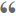

Remove additionnal contrast
Invert mode
This is the best motherfucking website.
Really, it is
Seriously, you guys think that a fucking website doesn't need some styling?
You probably build websites using vim and feeling hardcore. You think your 4.99KB
motherfuckingwebsit(.com) is going to get you some fucking award to put on your damn footer as a link. You think your fucking default font is gonna make your website run even on a toaster.
WRONG, motherfucker.
The best kick-ass website
Let me describe the real perfect-ass website which still has the glory of the past motherfuckingwebsites:
- Shit doesn't weigh a ton (in fact it's just 34.97 KB when the 27.83KB cat picture below is removed)
- The page weighs exactly 63.02kB, 93.7% less than the Google home page
- Fits on your iPhone 1st gen (although it doesn't work on your damn 16x32 Tamagotchi)
- Looks almost the same on every screen
- Every asshole that visits this website can use it without any problem "well, kind of
- It's accessible ,so everyone can enjoy it but not everyone can read this - this text is Ant-Accessible
- Shit is even more legible than the fucking two previous versions - and it also has a cleanish style without looking like an ARPANET website
- Doesn't load massive images or scripts. We should all care about people who still use IPoAC
- Uses only free and open resources. Like this ass-breaking font called "Open Sans" which btw wighs 15.21kB, wtf
- It doesn't load your glorious jQuery or jQueryUI with all their fucking styles and shits. Nor Angular or any other framework. This website is made with plain HTML, CSS3 and JS. Keep it Vanilla!
- Doesn't include any tracking service this website does, but hey, who cares
- Images aren't forbidden, but when SVG is available JUST USE IT.
- Use some fucking colors.
- Links don't really need to keep that shitty blue the browser is giving them: nor that violetish color when they are marked as visited. Just give them a nice color
And guess what, motherfucker:
This website is even better than the last guy and the guy before him.
Why?
- It's over a secure connection - so nobody can spy what we're serving to you (the page might be different for everyone, pshht!).
- It uses one of the most general gTLDs available out there: .website
- It uses the TLD, too: bestmotherfucking.website, check out domainr to do something cool too.
- It uses the kickassing Let's Encrypt CA (don't you see the gorgeous green lock?)
- It runs on nginx: the best fucking web server instead of Apache Server
- It uses a custom version of the awesome ultra-lightweight jQuery /s
- It doesn't use a single media query well, not really
- It probably doesn't support all the web browsers, but that's the best thing - if the user's browser is outdated he will notice and maybe he will switch from the crap he uses to a much cooler browser
- It uses some cool technologies like JavaScript , CSS3 and HTML5
- It supports HTTP/2
- It includes a Cache-Control header, so you don't waste your precious bandwidth if you visit the website more than once
- It uses Piwik, a free and Open Source analytics platform (we still love you Google, don't be mad at us)
- It allows universal access from every website via CORS
- It is Accessible
- It's Open Source, freely available on Github, and everybody can contribute to it.
- It uses the WTFPL - Do What the Fuck You Want to Public License, which is pretty clear on what you can and what you can't do:
0. You just DO WHAT THE FUCK YOU WANT TO.
Put even less contrast
Yeah, a #444 is cool but a #454545 is better.
We don't need to break our eyes while looking at a motherfuckingwebsite.
Size matters, yeah, but don't exaggerate
Remember, not everybody is blind, and not everybody wants to read a fucking 2 inches letter on a 27 inches screen, so keep it cool. Don't exaggerate in size, but don't make an ant-compatible text either.
Put some pictures
 We're not looking at a novel by Stephanie Meyer, this is a motherfuckingwebsite so include some pictures to give a context.
We're not looking at a novel by Stephanie Meyer, this is a motherfuckingwebsite so include some pictures to give a context.
The website shouldn't be overfilled with pictures, but it should make the user happy while reading your nonsense words.
You see that fancy cat? He's happy, you should be too.
A cat, just to keep the context of the website.
Yes, even this is satire.
But this doesn't mean you should load your motherfuckingwebsite with shitty animations, instead keep it simple, minify its resources and use images responsibly. Remember the IPoAC users!
 Good design is as little design as possible.
- Some German motherfucker on motherfuckingwebsite.com
That's not entirely true, look at that motherfuckingwebsite. It's so minimal that it can be considered crap.
Epilogue
Actually this website was made to follow the trend of the motherfuckingwebsite and the bettermotherfuckingwebsite.
Despite what was said here they're beautiful and truly among the best websites on the internet (even though this is still thebestmotherfuckingwebsite), so go check 'em out.
Seriously, follow some of the advice we gave you, they'll "make the web great again" Cit. needed
Author
This website was created by an annoyed developer that can be followed on Twitter, followed on GitHub or contacted here, on his ultra-minimalist website
Resources
The cat picture was taken from the cool Pixabay website: chehttps://github.com/denysvitali/thebestmotherfuckingwebsite/ck it out, it's really cool and full of CC0 (aka Public Domain) content. The author is 1899441 (seriously? His username looks like my PIN code!), the old picture was by aloiswohlfahrt, but I had to change it, cause it was too heavy and too cute. You can open an issue on GitHub if you think that this decision goes against the rules a good looking motherfuckingwebsite.
Legal
This website can be freely copied, modified, altered, distributed without any attribution whatsoever. However, if you feel like this website deserves an attribution, mention it. It won't hurt anybody :)
Please, read the license terms license terms.
Don't worry, it can be read in less than 30 seconds, unless you have some sort of reading disability - in that case, I'm wondering why you're still reading this text. Really. Stop. Please. I mean, seriously. Why are you still reading?

Contributions
Contributions
Since this website includes some contributions, and I'm not an asshole, I'll publically thank the following users for their help:
- @beardog108 for his < href="https://github.com/denysvitali/thebestmotherfuckingwebsite/issues/5">precious suggestions for the server side part (Cache-Control, HTTP/2, CORS and Piwik)
- , @abluejelly, @bharadwaj-raju for giving tips about contrast
- @hellerbarde for his hint about the visited link color (he proposed maroon) - if you don't like it, complain about it here
- @glodime for his suggestion about text justification on mobile
- @arthurtiteica
and @vktec for their suggestions about PIN Code / RAS Syndrome fix.
- @Zsavajji, @CapacitorSet, @danielquinn, @ehea617, @MrSaad, @tqdv for their help in spell checking